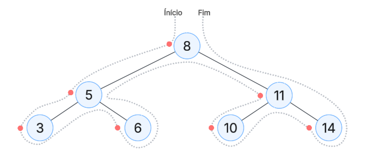

Guia de estudos de Árvores Binárias de Busca
Alterne entre 'Prática', 'Teoria' e 'Quiz' para aprofundar seus conhecimentos.
Use os controles para começar.
O que é uma Árvore Binária de Busca (ABB)?
Uma Árvore Binária de Busca (do inglês, Binary Search Tree ou BST) consiste em um conjunto de nós, onde cada nó possui no máximo dois filhos: um à esquerda e um à direita.
Existem três componentes em uma árvore binária:
- A raiz
- Subárvore esquerda
- Subárvore direita
Cada subárvore também é uma árvore binária e pode ou não estar vazia.
Além disso, subárvores esquerda e direita são conjuntos disjuntos de nós.
A principal característica que define uma ABB é a sua propriedade de ordenação:
- Para qualquer nó
N, todos os valores na sua subárvore esquerda são menores que o valor deN. - Para qualquer nó
N, todos os valores na sua subárvore direita são maiores que o valor deN. - Ambas as subárvores (esquerda e direita) também devem ser árvores binárias de busca.
Exemplo de uma ABB válida:
Esta propriedade torna operações como busca, inserção e remoção muito eficientes, com uma complexidade de tempo média de O(log n), onde 'n' é o número de nós na árvore.
Elementos
- O elemento da raiz de uma subárvore é chamado nó pai.
- A raiz de sua subárvore esquerda é chamada filho esquerdo e a raiz da subárvore direita é chamado filho direito.
- Um determinado nó que não possui filhos (subárvores esquerda e direita são vazias) é chamado de nó folha.
- Dois nós são ditos irmãos se são filhos do mesmo nó-pai.
- A altura de um nó é dada da seguinte forma: a raiz tem altura 0 e a altura de qualquer outro nó é dado pela distância do nó até a raiz da árvore.
- A altura de uma árvore é dada pela maior altura obtida dentre o conjunto de nós folha da árvore.
O Pior Cenário: Árvore Desbalanceada
A eficiência de uma ABB depende de sua altura. Se os nós forem inseridos em uma ordem já ordenada (por exemplo: 10, 20, 30, 40, 50), a árvore pode se tornar desbalanceada, assumindo a forma de uma lista ligada.
Exemplo de uma ABB desbalanceada:
Neste cenário, a altura da árvore se torna 'n', e a complexidade das operações cai para O(n), o mesmo que uma busca linear em uma lista. Estruturas como as Árvores AVL ou Rubro-Negras foram criadas para resolver este problema através do auto-balanceamento.
Não são árvores binárias
Implementação dinâmica

Travessia (Percursos)
Em uma Lista simplesmente encadeada, a única forma de pesquisar seus elementos é percorrer a lista sequencialmente, em ordem linear. Porém, em uma árvore existem várias estratégias de pesquisa. Todas elas envolvem a visita ao nó raiz e às suas subárvores esquerda e direita em uma determinada ordem.
Árvore binária que será usada nas travessias
Existem três formas principais de travessia em profundidade:
1. Pré-Ordem (Pre-order)
A travessia Pré-Ordem segue os passos:
- Visite a raiz da árvore
- Percorra a subárvore esquerda
- Percorra a subárvore direita
Ou raiz, esquerda, direita.
Resultado: 8, 5, 3, 6, 11, 10, 14
Dica extra: desenhe uma bolinha ao lado esquerdo de todos os nós, e passe o lápis conforme o tracejado do desenho. Quando o lápis passa numa bolinha, coloque na lista.
2. Em Ordem (In-order)
A travessia Em Ordem segue os passos:
- Percorra a subárvore esquerda
- Visite a raiz da árvore
- Percorra a subárvore direita
Ou esquerda, raiz, direita.
Resultado: 3, 5, 6, 8, 10, 11, 14
Dica extra: desenhe uma bolinha embaixo de todos os nós, e passe o lápis conforme o tracejado do desenho. Quando o lápis passa numa bolinha, coloque na lista.
3. Pós-Ordem (Post-order)
A travessia Pós-Ordem segue os passos:
- Percorra a subárvore esquerda
- Percorra a subárvore direita
- Visite a raiz da árvore
Ou esquerda, direita, raiz.
Resultado: 3, 6, 5, 10, 14, 11, 8
Dica extra: desenhe uma bolinha ao lado direito de todos os nós, e passe o lápis conforme o tracejado do desenho. Quando o lápis passa numa bolinha, coloque na lista.
Quiz sobre Árvores Binárias de Busca
Teste seus conhecimentos. Escolha um dos quizzes abaixo para começar.
Quiz Finalizado!
Sua pontuação foi: